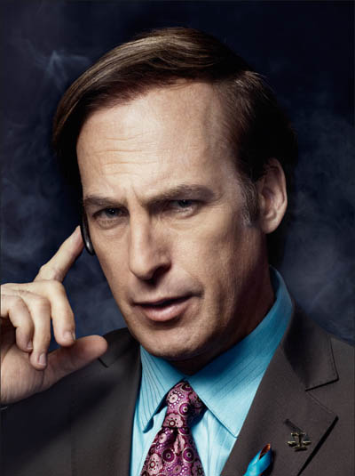

| Actor: Bryan Cranston | |
| Nacimiento: 7 de marzo de 1956 (edad 69 años) | |
| Bryan Lee Cranston es un actor, actor de voz, guionista, productor y director estadounidense, reconocido por su interpretación de Walter White, de Hal Wilkerson, y del doctor Tim Whatley. |
| Actor: Aaron Paul | |
| Nacimiento: 27 de agosto de 1979 (edad 45 años) | |
| Aaron Paul es un actor estadounidense. Paul es conocido por haber interpretado al personaje de Jesse Pinkman en la serie de AMC Breaking Bad. También tuvo un papel recurrente como Scott en la serie de HBO Big Love, y protagonizó la película Need for Speed. |
| Actor: Giancarlo Esposito | |
| Nacimiento: 26 de abril de 1958 (66 años) | |
| Giancarlo Giuseppe Alessandro Esposito (Copenhague, 26 de abril de 1958), conocido como Giancarlo Esposito, es un actor y director de cine y televisión estadounidense nacido en Dinamarca, conocido sobre todo por su papel como Gustavo «Gus» Fring en las series Breaking Bad y Better Call Saul; como Moff Gideon en The Mandalorian; y como Stan Edgar en The Boys |
| Actor: Anna Gunn | |
| Nacimiento: 11 de agosto de 1968 (56 años) | |
| Anna Gunn (Santa Fe, Nuevo México; 11 de agosto de 1968)[2] es una actriz estadounidense, reconocida por sus papeles de Skyler White en la serie de televisión Breaking Bad y de Martha Bullock en la serie Deadwood. |
| Actor: Bob Odenkirk |  |
| Nacimiento: 22 de octubre de 1962 (62 años) | |
| Robert John "Bob" Odenkirk (Berwyn, Illinois; 22 de octubre de 1962) es un actor, comediante, guionista, director y productor estadounidense. Es conocido por haber sido uno de los creadores y el coprotagonista de la comedia Mr. Show with Bob and David de HBO, por sus papeles recurrentes en Breaking Bad, Nobody, The Larry Sanders Show y por su protagónico en el spin-off Better Call Saul. |
| Actor: Dean Norris | |
| Nacimiento: 8 de abril de 1963 (61 años) | |
| Dean Joseph Norris (South Bend, Indiana; 8 de abril de 1963) es un actor estadounidense. Es más conocido por interpretar al agente de la DEA Hank Schrader en la serie Breaking Bad y Better Call Saul, de la cadena AMC y Netflix respectivamente, además de a "Big Jim" Rennie en la serie La cúpula, de la CBS. |